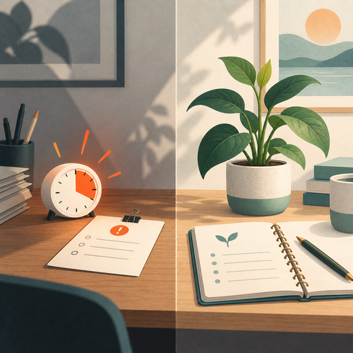
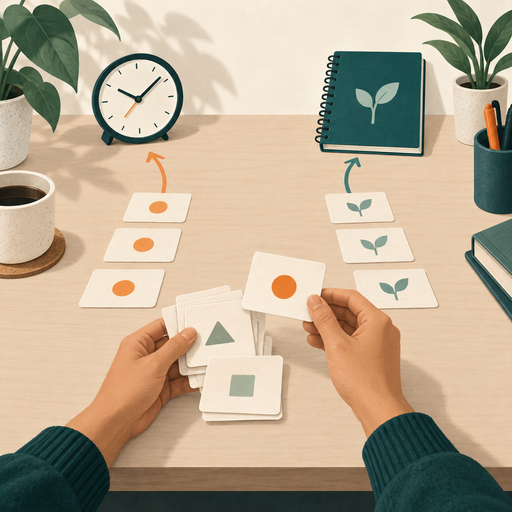

Urgent task
Requires immediate attention. It must be done now and has clear consequences if it is not completed within a certain timeline. It is a task you can’t avoid.
Urgent and important describe different reasons a task deserves attention.

Image slotRequires immediate attention. It must be done now and has clear consequences if it is not completed within a certain timeline. It is a task you can’t avoid.
Does not require immediate attention but helps you achieve long-term goals. It contributes significantly to your success, growth, or well-being and focuses on prevention, improvement, or long-term planning.
The level of importance is determined by your personal or organizational objectives rather than external pressures.
Urgent and important tasks deserve attention for different reasons.
Because urgent tasks create pressure, delaying them can increase stress and contribute to burnout. The goal is to respond to urgent work deliberately rather than allowing it to control the entire day.
Important work may be easy to postpone, but it protects long-term success. Planning, improvement, and relationship-building can help prevent future crises.
When you understand the difference between urgent and important work, you can allocate time and resources more effectively.
Select a category to see the action it suggests.
Choose a task to practice noticing what needs immediate attention and what protects the future.

Takeaway: Identify one task in your workload that is urgent and one that is important but easy to postpone. Give both a deliberate place in your plan.